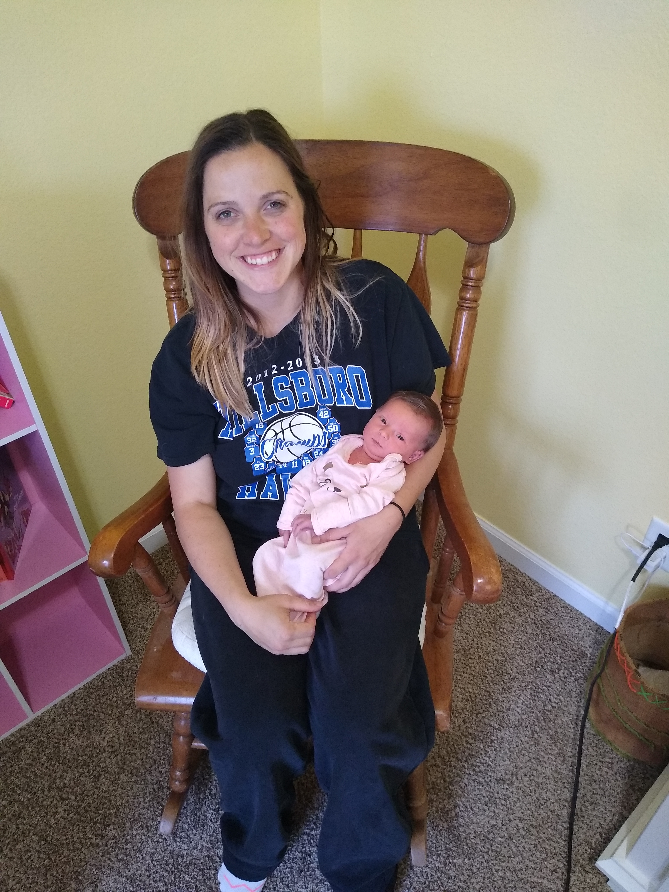
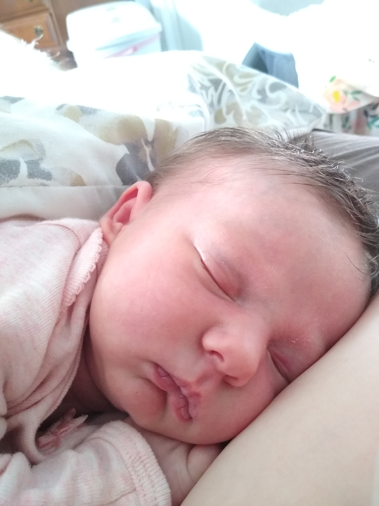
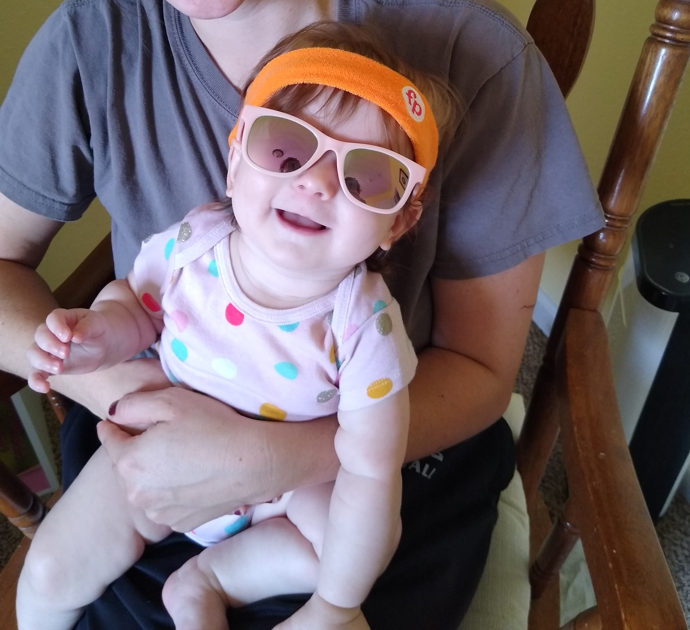

Mommy & baby
When I first found out I was pregnant, I was so excited!! I had waited so long. My own little bean. But nobody can prepare you for how much that little bean is going to impact every aspect of your life. Being a mom is by far the best thing I have ever experienced.
Do I look tired? Absolutely. But no amount of exhaustion could compare to this new type of love in my heart. And when people say babies don't come with a user manual, they are serious. The hospital just sends you home. With a newborn. Nuts. But day by day, we got to know one another. Now I hardly think about a time when she wasn't there. I know I sound dramatic, but seriously, there is nothing in this world better than her love.
Me, a person who was used to getting at least 8 hours of sleep each night, was suddenly able to function with much less, while giving my all to this litte thing I had created. And happier than I had ever been. I look forward everyday waking up to that sweet, sqishy, smiling face. Everyday i find the motivation to move further my learning of coding, because I know it will give us the life I have dreamed of. And she certainly deserves that.
For most, 2020 is a year they would like to forget, but this year has been the best of my life. Although the word worry took on a whole new meaning. It seems like thats all I did at first. I could hardly leave her side. Our home was our safezone. Leaving the house? Forget about it! Day by day, we find a new balance and discover more and more about one another. It seems so natural now going through our days together. And I am going to soak up every minute.